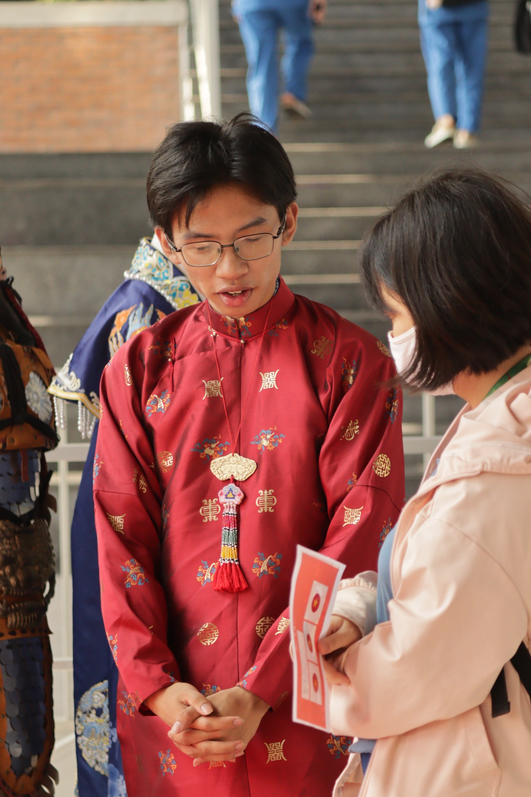

Multimedia Communication · Storytelling · Social Impact
Stories can change
the way we see people.
Personal archive of films, photography, community projects, and the experiences that shaped how I see communication.

01 / About me
I explore how storytelling can create empathy and turn awareness into action.
I am a Multimedia Communication student interested in visual storytelling, social impact, community work, and cultural projects.
02 / Featured story
The Window
Without a Horizon
A short film inspired by my experience meeting children with cancer, exploring their everyday lives, dreams, and the people who care for them.

03 / Recognition
Best Short Film
Recognition is part of the film’s journey, but not the center of it.


04 / Miraculous Moments
A story before
the film.
Miraculous Moments began with a volunteering experience where I met pediatric cancer survivors, listened to their stories, and shared moments of creativity and joy.


05 / Flying Heart
Field notes
from the road.
Flying Heart brought me closer to community work on the ground: long roads, preparation, meeting families and children, and helping create small moments of care.


06 / Chạm Việt Phục
Bringing heritage
closer.
A student-led cultural project inviting people to engage with Vietnamese traditional clothing through display, conversation, and participation.




07 / Tiên Thường Tuần Du
Tradition
in motion.
A cultural space where costume, performance, and community participation came together.


08 / Selected Projects
Miraculous Moments
Community · Photography · Social Impact
The Window Without a Horizon
Short Film · Screenwriting
Flying Heart
Volunteer Work · Community Outreach
Chạm Việt Phục
Cultural Heritage
Tiên Thường Tuần Du
Cultural Participation
09 / What's Next
Awareness.
Understanding.
Action.
I want to keep exploring how communication can turn awareness into understanding, and understanding into meaningful action.